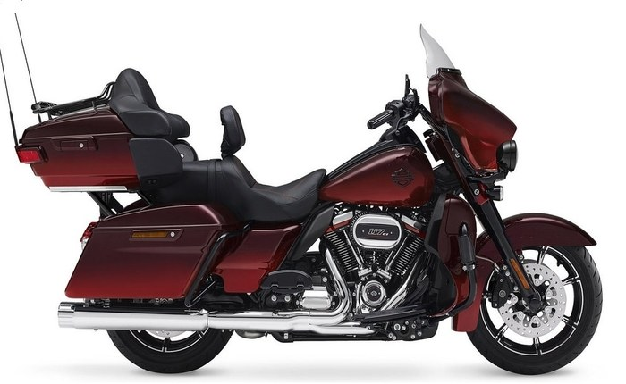

Harley-Davidson переносить виробництво в ЄС. Трамп здивований
Легендарний американський виробник мотоциклів Harley-Davidson заявив про відхід з США через підвищення мит.
Harley-Davidson має намір перенести своє виробництво в Європу через підвищення мит на свою продукцію в країнах ЄС з 6% до 31%, повідомляє ВВС.
– Щоб усунути значну вартість цього тарифного тягаря в довгостроковій перспективі, Harley-Davidson буде здійснювати план по перенесенню виробництва мотоциклів для країн ЄС із США, – пояснили в компанії.
Президента США Дональда Трампа вже відреагував на заяву компанії в Twitter.
– Здивований тим, що Harley Davidson стала першою із компаній, яка викинула білий прапор. Я чимало бився за них, а в підсумку вони не будуть платити мита при продажах в ЄС, який завдав США чималої шкоди в торгівлі, – написав Трамп.